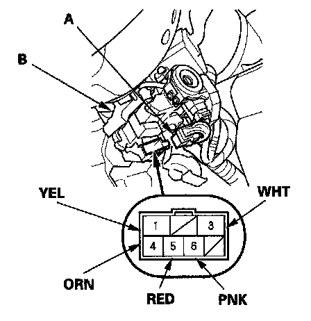
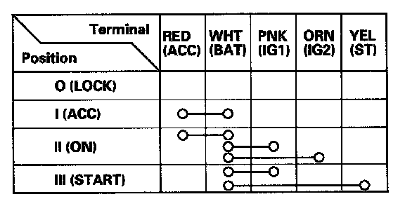

Ignition Switch: Testing and Inspection
Ignition SwitchTest
SRS components are located in the area. Review the SRS component locations and precautions and procedures before performing repairs or servicing.
1. Make sure you have the anti-theft code for the audio and navigation system (if equipped).
2. Disconnect the negative battery cable.
3. Remove the steering column covers.

4. Disconnect the 7P connector (A) from the ignition switch (B).

5. Check for continuity between the terminals in each switch position according to the table.
6. If the continuity does not agree with the table, replace the ignition switch.
7. After reconnecting the battery, enter the audio and navigation system anti-theft codes, and set the clock.